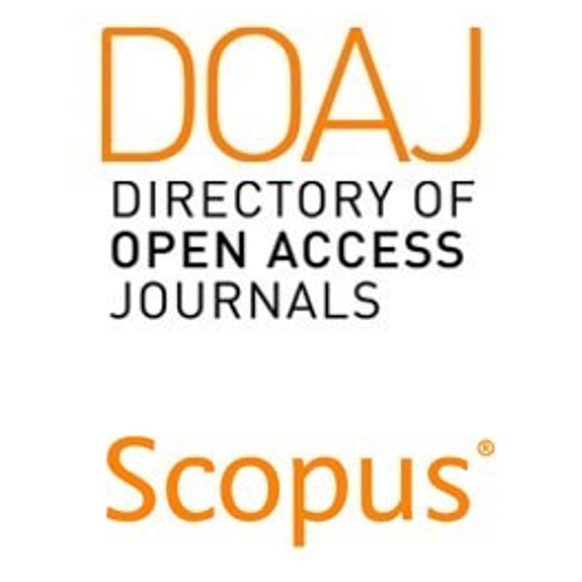
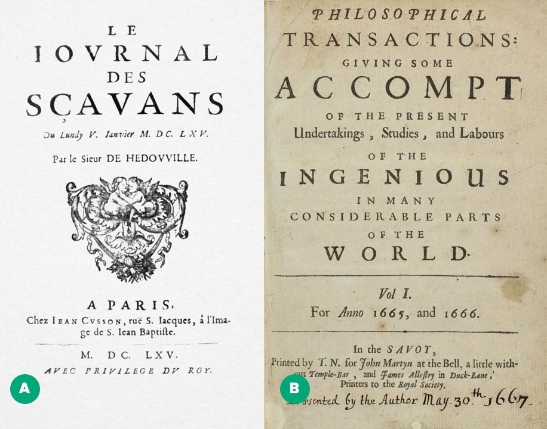
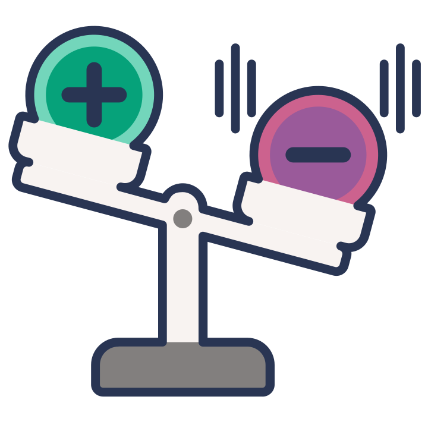
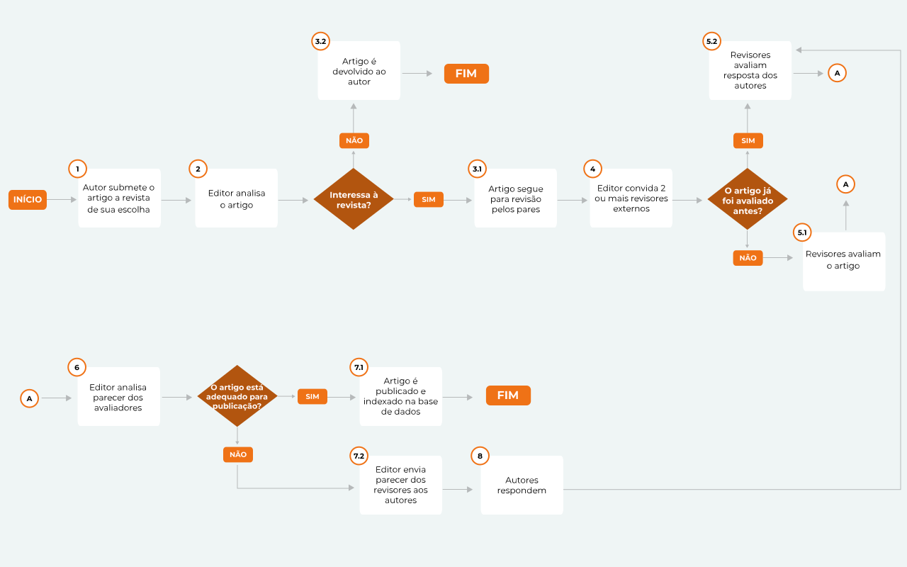
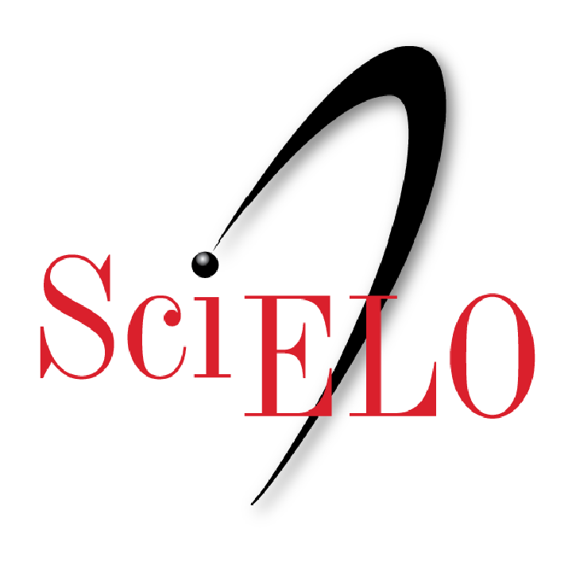

Módulo 3 . Aula 2
Implicações na Comunicação Científica
Módulo 3 . Aula 2
Implicações na Comunicação Científica
 Objetivos da
aula
Objetivos da
aula
Nessa aula, você será apresentado à relação entre o movimento do Acesso Aberto e os seus efeitos sobre a comunicação científica. Ao final, você será capaz de:
- Conhecer marcos históricos da comunicação científica e o panorama atual das revistas científicas no mundo.
- Compreender a importância da revisão por pares como mecanismo de avaliação da qualidade, originalidade e relevância dos artigos científicos.
- Identificar a crise das bibliotecas como propulsora do movimento pelo Acesso Aberto.
- Conhecer a principal modalidade de revisão por pares praticada até hoje, seus pontos críticos, além de inovações como a revisão aberta por pares e os preprints.
- Conhecer o Programa SciELO, seu papel para promoção do Acesso Aberto e no fortalecimento de periódicos visando expandir a sua visibilidade, impacto e credibilidade.
Panorama das revistas científicas
A publicação de artigos em revistas científicas é a base da comunicação científica. Ou seja, do processo de circulação dos novos conhecimentos e descobertas realizadas pela comunidade científica nacional e internacional.

Atualmente, o número de revistas científicas em todas as áreas do conhecimento é de, pelo menos, 56 mil se considerarmos aquelas que tiveram pelo menos um dos 4,7 milhões de artigos indexados na base OpenAlex em 2023. No mesmo ano, a base Scopus da companhia Elsevier indexou 26.660 revistas, que publicaram pelo menos um dos 3,3 milhões de artigos indexados segundo o portal Scimago. Estes números são o resultado do acúmulo de três séculos e meio de disseminação do conhecimento científico por meio de revistas.
Marcos inaugurais da comunicação científica
Antes do surgimento do Le Journal des Sçavans e da Philosophical Transactions, a forma padrão de divulgação da ciência era através de livros. Por exemplo, o livro de Galileo Galilei, "Diálogo sopra i due massimi sistemi del mondo", publicado em 1632.
As primeiras revistas científicas foram fundadas em 1665:

Journal des Sçavans, lançado em 5 de janeiro em Paris e interrompido em 1972
Philosophical Transactions, lançado em 6 de março em Londres e que posteriormente foi dividida em duas publicações em 1887 - uma dedicada às ciências físicas e outra às biológicas. Ambas revistas continuam até hoje dedicadas à publicação de números temáticos e de reuniões da Royal Society.
A circulação da Philosophical Transactions trouxe duas mudanças importantes para o cenário da publicação científica:
- O uso de textos reduzidos, no (formato) de 'carta';
- O uso da língua (linguagem) nacional ao invés do Latim, então a língua franca do mundo acadêmico.
Como sustentar a circulação de um periódico?
Do ponto de vista da operação de uma revista científica, outras questões ajudam a definir as condições mínimas para o seu êxito ao longo do tempo.
- Quem é o público-alvo? Leitores/cientistas/estudantes em busca de atualização?
- Que informação disseminar? Quem serão os autores/cientistas desejosos de veicular a sua produção intelectual/científica?
Quem deve arcar com os custos de divulgação?
De modo geral, as revistas científicas operam em ambiente de permanente incerteza financeira, que também é típico da ciência contemporânea. Este contexto propiciou o florescimento de um modelo que, em um primeiro momento, parecia funcionar relativamente bem do ponto de vista comercial: o modelo de assinatura.
No modelo por assinatura, o leitor (leia-se bibliotecas) paga para obter acesso ao conteúdo integral dos artigos. Este modelo, no entanto, sofreu forte pressão da comunidade científica e de entidades financiadoras para mudar o seu pilar de sustentação: a restrição de acesso.
Na década de 1990, o modelo de assinatura chegou a um limite estrutural e a chamada “crise dos periódicos” irrompeu quando se tornou inviável para as bibliotecas universitárias e de pesquisa manterem suas coleções de periódicos e atenderem às crescentes demandas por novos títulos vindas de seus usuários. Esta crise foi ainda mais gravemente vivida pelas bibliotecas dos países em desenvolvimento.
As pressões resultaram, entre outros efeitos positivos, no surgimento de um novo modelo de publicação científica que eliminou muitas barreiras de entrada na atividade editorial, propiciando o acesso ao conteúdo integral dos artigos publicados. Estamos falando do movimento pelo Acesso Aberto à literatura científica.
O surgimento de revistas exclusivamente digitais (sem versão impressa) e de Acesso Aberto permitiu que uma parte significativa do conhecimento gerado pudesse ser lido, discutido e compartilhado por qualquer pessoa em qualquer lugar do mundo (desde que tenha acesso à internet).
Isto era algo inimaginável até o final dos anos 1990. No entanto, este modelo de “acesso aberto” veio acompanhado de uma outra novidade criada pelas editoras: a cobrança de taxas de processamento de artigos (article processing charges – APC, em inglês). Agora, o autor (ou seu financiador) paga para publicar o artigo científico em Acesso Aberto. Em consequência, descortinou-se uma oportunidade de negócios muito atraente na editoração científica.
Até então, o “negócio” de publicar artigos científicos em meio impresso era uma exclusividade de organizações acadêmicas (sem fins lucrativos) e de poucas grandes empresas editoriais (comerciais), necessitando ambas de capital para entrar e manter-se em operação.
A virtual ausência de barreiras técnicas, regulatórias ou financeiras, tornando-se em uma atividade ao alcance de qualquer indivíduo com um investimento mínimo.

DesvantagensA digitalização das revistas favoreceu o crescimento acelerado da atividade editorial e a multiplicação de periódicos, acarretando a banalização da publicação científica e também dos conflitos de interesse.
Revistas predatórias
Em meio à pressão em publicar muitos artigos, os pesquisadores podem ser enganados por falsas promessas de publicação rápida por revistas que comentem diversos tipos de fraude.
A estratégia mais popular das chamadas revistas predatórias é o envio massivo de e-mails convidando os pesquisadores a publicar rapidamente um artigo mediante o pagamento de uma taxa. Em algumas abordagens, a revista afirma que o estudo teria sido selecionado e/ou pré-aprovado pelo corpo editorial. Outras estratégias são a divulgação de informações falsas, incorretas ou enganosas sobre seu conselho editorial, fator de impacto, indexação, posicionamento em rankings, entre outros.
Mas eis a pergunta que realmente interessa: esta quantidade de artigos é igualmente traduzida em qualidade, influência e relevância?
Como a relação quantidade x qualidade das publicações não é linear, alguns estudiosos entendem que é chegado o momento de frear o ímpeto dos pesquisadores de atender a cultura do “publicar ou perecer”, pois há um sério risco de a sociedade deixar de acreditar nos benefícios da atividade científica.
As crises e as inovações na comunicação científica
Além da questão da sustentabilidade econômica vivenciada na crise dos periódicos, a comunicação científica também vem enfrentando outra situação que desafia suas estruturas seculares pela chamada “crise da revisão por pares”. Ela foi desencadeada por notícias de fraude e má conduta no principal pilar da comunicação científica - o mecanismo de avaliação da qualidade, originalidade e relevância dos artigos científicos - a revisão por pares (peer review, em inglês).
O que é revisão pelos pares
Para publicar um artigo em uma revista científica, o autor precisa submeter o seu manuscrito a um processo de avaliação coordenado pelo editor-chefe da revista ou editores auxiliares designados que, por sua vez, selecionam cientistas externos equipe permanente do veículo para emitir um parecer sobre o trabalho submetido.
Alguns requisitos mínimos devem ser obedecidos neste processo: os revisores (no mínimo dois) não podem pertencer ao mesmo departamento/laboratório dos autores do artigo, não podem ter sido colaboradores recentes dos autores, e sobretudo, devem ser especialistas no tema da pesquisa relatada no artigo.
![Infográfico com fundo claro intitulado “O processo de revisão por pares”. Na parte superior, há pequenas ilustrações que representam cientistas trabalhando. O fluxo é apresentado em etapas com setas: primeiro, cientistas realizam uma pesquisa. Em seguida, escrevem um artigo com os resultados. Depois, o artigo é enviado ao editor de uma revista científica, que o encaminha para outros cientistas da mesma área avaliarem. À direita, aparecem avaliadores analisando o texto e enviando comentários de volta ao editor. O material pode retornar aos autores para ajustes e revisões, podendo passar por esse ciclo mais de uma vez. Na parte inferior, o infográfico indica que, se o artigo atender aos critérios editoriais e de qualidade, ele é publicado; caso contrário, pode ser rejeitado.](../media/modulo3/aula2-img3.jpg "Fonte: Saber Ciência")
Entenda o processo:
- Após um prazo pré-estabelecido (geralmente de 2 a 4 semanas, dependendo da área de conhecimento) cada revisor envia separadamente o seu parecer sobre o manuscrito para análise e decisão do editor responsável.
- Se o revisor questiona os dados, metodologia e outros aspectos do artigo, e sendo do interesse do editor em continuar o ciclo de avaliação, estes questionamentos são enviados aos autores para as devidas respostas.
- Após a resposta dos autores, o editor encaminha o texto com as respostas/modificações aos revisores para uma nova avaliação. Este processo de avaliação/resposta poderá se repetir várias vezes, até que revisores e editores concordem que o artigo esteja pronto para publicação. Pode ocorrer também que os autores não consigam (ou não queiram) responder adequadamente aos revisores. Neste caso, o editor toma a decisão de encerrar o ciclo de avaliação, rejeitando o artigo.
Ciclo de avaliação pelos pares
A revisão pelos pares desempenha um papel importante na ciência contemporânea, funcionando como um “elemento de certificação” da publicação científica. Pressupõe-se que todo o trabalho passou pela avaliação de outros pesquisadores, de forma isenta e estabelece um padrão mínimo de qualidade e veracidade.
Ciclo de avaliação pelos pares
pan_tool_alt CliqueToque no fluxograma para ampliá-lo

Descrição do fluxograma: fluxograma em fundo claro, organizado horizontalmente, com etapas numeradas dentro de pequenos círculos. Há um retângulo com indicação de início, seguido pelo texto 1 escrito “Autor submete o artigo a revista de sua escolha”. Uma seta leva para outro texto 2 “Editor analisa o artigo”, seguido para um losango de fundo laranja escrito “Interessa a revista?”. Há dois caminhos para a pergunta. Caso direcione para a resposta “Não”, é seguido para o texto “Artigo é devolvido para o autor”, seguido para um retângulo de fundo laranja escrito “Fim”. Caso direcione para a resposta “SIM”, é seguido para o texto 3.1 “Artigo segue para revisão por partes”, seguido pelo texto 4 “Editor convida 2 ou mais revisores externos”, seguido para um losango de fundo laranja escrito “Ao artigo já foi avaliado antes?” Há dois caminhos para a pergunta. Caso direcione para a resposta “Não”, é seguido para o texto 5.1 “Revisores avaliam o artigo”. Caso direcione para a resposta “Sim”, é seguido para o texto 5.2 “Revisores avaliam resposta dos autores”. As duas respostas levam para o texto 4 “editor analisa parecer dos avaliadores”, seguido para um losango de fundo laranja escrito “O artigo está adequado para publicação?”. Há dois caminhos para a pergunta. Caso direcione para a resposta “Sim”, é seguido para o texto 7.1 “Artigo é publicado e indexado na base de dados”, seguido para um retângulo de fundo laranja escrito “Fim”. Caso direcione para a resposta “Não”, é seguido para o texto 7.2 “Editor envia parecer dos revisores aos autores”, seguido para o texto 8 “Autores respondem”, que retorna para o texto 5.2 “Revisores avaliam resposta dos autores”.
Pontos críticos da revisão por pares
A rotina das publicações científicas tem revelado um cenário que destoa daquele projetado pelo “ideal” da revisão por pares e cujos desvios podem lançar dúvidas sobre a sua eficácia como “certificador” da prática científica. Alguns pontos críticos são:
pan_tool_alt CliqueToque e arraste para passar os cartões
Atualmente, nas ciências biomédicas, este processo de avaliação pode demorar de 1 a 6 meses, às vezes até um ano. Nas áreas mais competitivas (e nas revistas de mais prestígio), este processo leva em média 1 a 2 meses.
Inovação ao avaliar: a revisão aberta por pares
Há diversas modalidades de revisão por pares, mas o tipo mais utilizado pelas revistas científicas (de acesso restrito ou acesso aberto) até o momento é a revisão fechada.
A revisão fechada é o tipo mais utilizado pelas revistas cientificas (de acesso restrito ou acesso aberto) até o momento. Nela, os pareceres não se tornam públicos sendo realizada de maneira anônima dupla. Ou seja, revisores não sabem a identidade dos autores, e estes não sabem quem são os revisores. Na teoria, o duplo anonimato da revisão por pares garantiria uma avaliação exclusivamente do mérito do artigo, sem o viés causado pelo conhecimento prévio da identidade de autores, vínculo institucional, nacionalidade e gênero. Na prática, é difícil o completo anonimato devido à facilidade de se obter informações nas bases de dados científicas.
Para lidar com a crise da revisão por pares, diversas revistas vêm adotando a modalidade aberta de avaliação de manuscritos. Nesta nova dinâmica de avaliação, todo o procedimento está visível ao público: pareceres dos revisores, respostas dos autores, decisão do editor. Os pareceres e as respostas são incorporados ao conjunto de arquivos do artigo, podendo, em alguns casos, serem citados independente do artigo principal (é atribuído um identificador de objeto digital DOI, a cada parecer).
Em relação à identificação de avaliadores, a revisão aberta pode identificar ou não os pareceristas. Alguns exemplos de adoção desta modalidade de revisão são a revista F1000 e as plataformas de publicação de agentes de financiamento como a Fundação Bill & Melinda Gates e a Wellcome Trust.
Para saber mais sobre a revisão por pares aberta, acesse a aula 3.
Preprints
A revisão pelos pares é um mecanismo muito importante para a disseminação dos resultados da pesquisa científica, mas é possível ajustá-la às novas formas de comunicação científica como, por exemplo, a publicação imediata em repositórios de preprints.
Quando a circulação da comunicação científica se dava por meio das publicações impressas, o termo preprint se referia à versão do artigo ainda não publicado (manuscrito) que poderia ser disponibilizado, distribuído ou arquivado em repositórios pessoais. Atualmente, a referência do termo é diferente.
O termo preprints se refere à publicação de artigos em repositórios (de preprints) que se caracterizam pela disponibilização rápida do conteúdo após uma apreciação inicial do editor e antes da avaliação por pares. Estas características permitem que o conteúdo esteja rapidamente disponível para leitura por potenciais interessados e para a avaliação aberta pela comunidade científica.
Esta inovação traz efeitos positivos para a circulação do conhecimento e pontos de atenção, especialmente em relação à certificação do conhecimento e reúso por públicos não especializados.
Para saber mais sobre preprints, acesse a aula 4, Preprints.
O Programa SciELO
Pioneiro na promoção do Acesso Aberto, o Programa SciELO, criado em 1998, é uma biblioteca virtual de revistas científicas brasileiras em formato eletrônico e que opera com uma metodologia própria para a preparação, armazenamento, disseminação e avaliação de publicações científicas. Os principais objetivos do SciELO são:
- Promover a inserção proativa de periódicos de qualidade crescente editados nacionalmente e da pesquisa que eles comunicam no fluxo global de informação científica, contribuindo, assim, para fortalecer e expandir a sua visibilidade, impacto e credibilidade.
- Contribuir ao avanço da pesquisa mediante o desenvolvimento de infraestruturas e capacidades nacionais em comunicar pesquisas de acordo com o estado da arte do modus operandi de Ciência Aberta.
Veja a seguir algumas informações importantes sobre o SciELO:
O Programa é implantado por um conjunto de políticas, metodologias e tecnologias que conformam o modelo SciELO de publicação e que opera coleções (ou bibliotecas) web de diferentes objetos de comunicação de pesquisa, originados de práticas de Ciência Aberta.
Sua centralidade está nos periódicos científicos que operam coleções de artigos revisados por pares. No entanto, vale destacar que seu modelo também atua com preprints disponibilizados em servidores de preprints, dados de pesquisa subjacentes aos artigos e aos preprints, disponibiliza pareceres de avaliação por pares e possibilita também a publicação de livros e capítulos de livros.
- O portal da Rede SciELO – www.scielo.org provê acesso às 17 coleções nacionais de periódicos incluindo a SciELO Brasil, à coleção internacional de periódicos de saúde pública, ao repositório SciELO Data↗de dados de pesquisas, ao servidor SciELO Preprints e à coleção SciELO Livros.
- O modelo é adotado por 17 países de três continentes que operam coleções nacionais de periódicos que formam a Rede SciELO – África do Sul, Argentina, Bolívia, Brasil, Chile, Colômbia, Costa Rica, Cuba, Equador, Espanha, Jamaica, México, Paraguai, Peru, Portugal, Uruguai, Venezuela.
- No primeiro semestre de 2024, a rede indexa 1.230 periódicos com 51.200 documentos publicados em 2023.
- Desde 1997, o repositório SciELO acumula mais de 1 milhão de documentos que serviram uma média diária de 1,3 milhão de downloads em 2023.
- A coleção SciELO Brasil indexa 318 periódicos que publicaram 21 mil documentos em 2013 que serviram uma média diária de 850 mil downloads.
- Em 2023, o servidor SciELO Preprints recebeu 1.033 manuscritos com 72% de aprovação (742 preprints).
- Já o repositório SciELO Data indexou um total de 1.232 arquivos de artigos de 52 periódicos e de artigos do SciELO Preprints.
O SciELO rumo à Ciência Aberta
Desde 2020, o Programa vem promovendo seu alinhamento progressivo com as boas práticas da Ciência Aberta. Este reposicionamento requer mudanças significativas nas políticas editoriais e na gestão dos periódicos com implicações importantes na operação do fluxo operacional de avaliação de manuscritos, editoração, publicação e disseminação dos artigos. A expectativa é que este alinhamento alcance a maioria dos periódicos nos próximos dois a três anos, sendo o ganho mais importante que advém da Ciência Aberta o fortalecimento da transparência e do caráter cooperativo da pesquisa.
Na celebração dos 25 anos de operação regular, o SciELO foi requalificado como Programa de Ciência Aberta com IDEIA – Impacto, Diversidade, Equidade, Inclusão e Acessibilidade, que expressa a sua natureza de política pública orientada ao desenvolvimento de infraestruturas e capacidades nacionais de comunicar pesquisa de acordo como estado da arte.
Assim, a sua estratégia é maximizar a visibilidade dos periódicos, buscando ampliar o impacto crescente das pesquisas que estes comunicam. Esta visibilidade é promovida em contextos caracterizados pela abrangência geográfica, temática, de gênero, etnia, de superação de limitações de escrita, leitura, publicação e acesso.
Como programa de Ciência Aberta, o SciELO realiza a gestão e operação de coleções web (ou bibliotecas) de objetos de comunicação em Acesso Aberto, centradas em coleções nacionais de periódicos. Suas principais funções são:
pan_tool_alt CliqueToque e arraste para passar os cartões
Conheça a seguir os princípios da SciELO:
Este princípio orienta a adoção do acesso aberto segundo a licença de atribuição CC-BY do sistema de licenças Creative Commons. Orienta também o processo contínuo de transição do programa e dos periódicos para o modus operandi de Ciência Aberta. É também a partir deste princípio que o Programa SciELO se posiciona como um bem público global.
Trata-se de um meio para escalar a racionalização de custos na adoção do estado da arte em comunicação de pesquisas, maximizar o intercâmbio de experiências e aprendizagem e gerir as assimetrias entre coleções e revistas.
O SciELO promove e condiciona a certificação de coleções nacionais e a indexação de periódicos ao controle de qualidade com rigor e transparência crescentes dos processos editoriais dos periódicos, de indexação pelas coleções nacionais e de comunicação integrada ao fluxo global de informação científica. A obediência a este princípio é essencial para a interoperabilidade dos periódicos e pesquisas e principalmente para o desenvolvimento, adoção e adaptação de inovações.
Os princípios FAIR orientam a gestão e operação dos conteúdos para maximizar a disseminação.
Compreende as dimensões geográficas, temáticas, de gênero, etnias e pessoas com deficiências que limitam o acesso equitativo às fontes de informação e conhecimento.
O modelo SciELO de publicação
O modelo SciELO de publicação vem sendo aperfeiçoado seguidamente e compreende políticas, procedimentos, metodologias e tecnologias que desenvolvem as coleções da Rede SciELO. O modelo compreende as seguintes dimensões:
pan_tool_alt CliqueToque e arraste para passar os cartões
A adoção progressiva deste modelo por diversos países qualificou o SciELO como um programa de cooperação internacional, liderado por organismos nacionais de ciência e tecnologia, cabendo ao SciELO Brasil, as funções de secretaria técnica da rede e a responsabilidade pela manutenção e aplicação do modelo SciELO de publicação.
A rede SciELO

A cooperação internacional do Programa SciELO se fundamenta no entendimento comum de que os periódicos de qualidade editados nacionalmente cumprem funções essenciais nos sistemas nacionais de produção científica, e assim, contribuem ativamente no fluxo global de informação científica. Os periódicos SciELO são de diferentes disciplinas e, além do inglês, publicam nos idiomas nacionais dos países da rede SciELO.
O Programa SciELO destaca também que a capacidade de publicar periódicos de qualidade é parte essencial da capacidade nacional de fazer pesquisa de qualidade.
O Programa SciELO destaca também que a capacidade de publicar periódicos de qualidade é parte essencial da capacidade nacional de fazer pesquisa de qualidade.
A Rede SciELO é descentralizada em termos de governança, financiamento e operação. A rede consiste em coleções de periódicos publicados nacionalmente por sociedades científicas, associações profissionais, universidades e outras instituições de ensino selecionadas.
Cada país gerencia e opera a coleção nacional de acordo com o modelo SciELO de publicação.
SciELO como padrão de qualidade
Na maioria dos países, a indexação na coleção SciELO representa um selo de qualidade e reflete a aplicação de políticas nacionais de apoio aos periódicos como parte das políticas nacionais de pesquisa e comunicação científica. A indexação, que compreende a avaliação sistemática de periódicos para ingresso e permanência na coleção nacional é realizada por um comitê nacional formado por especialistas representantes das diferentes áreas de pesquisa e comunicação científica.
SciELO como programa nacional brasileiro
No Brasil, desde 2024, a governança e manutenção do Programa SciELO foi formalmente nacionalizada por meio de um consórcio formado pela CAPES, CNPq e FAPESP. O programa se desenvolve por meio de projetos trienais executados pela Fundação de Amparo à Pesquisa da Universidade Federal de São Paulo - UNIFESP.
Visão de futuro: linhas prioritárias de ação (2024-2028)
A Rede SciELO se desenvolve a partir de linhas prioritárias de ação de profissionalização, internacionalização e sustentabilidade, que são atualizadas quinquenalmente, com foco nas políticas de formação, desenvolvimento e operação de coleções, as políticas editoriais dos periódicos. O seu objetivo é o aprimoramento em consonância com o estado da arte internacional, o alinhamento com as boas práticas da ciência aberta e as prioridades nacionais de pesquisa e comunicação científica. Suas principais ações:
- Atualização dos critérios de indexação das coleções nacionais para o ingresso e permanência de periódicos;
- Disseminação da importância que têm para o avanço dos periódicos e as pesquisas que publicam;
- Atualização das infraestruturas metodológicas e tecnológicas de operação da coleção nacional e mais especificamente dos periódicos e cursos de atualização de editores.
Como citar esta aula:
PACKER, Abel Laerte; BRANDÃO, Adeilton Alves; SANTOS, Solange Maria dos. Implicações da Comunicação Científica. In: JORGE, Vanessa; CLINIO, Anne (Coord.). Programa de Formação Modular em Ciência Aberta. Módulo, 2. Acesso Aberto. Aula 2 (2ª edição), Rio de Janeiro: Fiocruz, 14 ago. 2025 Disponível em: https://mooc.campusvirtual.fiocruz.br/rea/ciencia-aberta-2ed/modulo3/aula2.html. Acesso em: 14 nov. 2025.